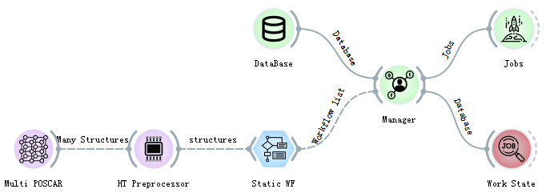

High-Throughput Overall Process¶
Each basic operation in the ALKEMIE software is encapsulated as a control, that is, the circular icon shown in the figure below. The left side of the control accepts data incoming, and the right side transmits data out. After the data input on the left side of the control is processed by the control, the output interface on the right is connected to the next related control through a solid line, which is similar to the flow of data, so it is called a data stream. The dotted line in the middle indicates that the control is connected, but the data has not yet been transmitted, and the solid line indicates that the data is successfully transmitted. After double-clicking each circular control, the detailed parameter configuration can be completed. If you select Apply automatically, the data will automatically flow downwards. This is also the basic idea of ALKEMIE’s high-throughput automatic process.
The total flow of high-throughput calculation in ALKEMIE software is shown in the figure below. Each part will be introduced in detail in 1.2-1.4. The total high-throughput calculation process is divided into the following three parts：
{kind=link}
Firstly, select the appropriate control for modeling, and after unified processing by the high-throughput processor control (HT Preprocessor), you can view the relevant information in the Data Table and Data Info. The high throughput processor control (HT Preprocessor) is a key control connecting the material structure and first-principles calculations.
The high-throughput processor output interface can be connected to the controls related to the first-principle VASP actual calculation process, that is, to connect multiple calculation workflows. After selecting different workflows, it is also necessary to uniformly connect all different calculation controls to the Manager management control, which is used to manage the required calculation tasks and send the tasks to the database on the server. At the same time, you need to set the location of the database (ip, port, database name, user, password and other information), that is, the task submission database and the calculation result storage database in the DataBase control. Due to the particularity of material structure information and calculation results, relational databases such as SQL are not used, so MongoDB is selected as the remote server database for our entire set of software.
After adding the workflow task, connect the management control to the Jobs task submission control to start the calculation.
Basic concepts of high-throughput modeling（MultiPoscar）¶
ALKEMIE software can complete the automatic modeling process by controlling POSCAR, Builder, Multi POSCAR and Finder, and users can independently choose the most suitable modeling method according to their needs. This module also contains the structure visualization part but you need to install the VESTA software. If you need visualization, you can download and install VESTA by yourself (http://jp-minerals.org/vesta/en/), and visualize it through the Viewer control in Plotter. The following modules will explain it in detail. The high-throughput calculation module does not involve structure visualization.
Note
In materials science, most of the structure files are saved in POSCAR or CIF format. Here, the POSCAR control and Multi POSCAR control are specially used to parse the structure files of these two specific formats. In addition, we also support unusual XSF, XYZ and other material structure format files. ALKEMIE software can also support the simultaneous import of multiple structure files. This method can be completed by Multi POSCAR, as shown in the following figure, select 7 structure files at a time, and specify the structure visualization through the drop-down box. After selecting Apply automatically, the structure will be automatically transferred to the high-throughput processor for subsequent calculations.
{kind=link}
Basic concepts of workflow examples¶
The input interface of each workflow must be the output interface of HT Preprocessor, and the result must be passed to the Manager. Multiple workflow controls can be connected through HT Preprocessor to achieve multi-task operation. When multiple POSCARs are passed in and multiple workflow controls are connected, the calculation of each workflow will be performed on each POSCAR file. For example, 2 POSCARs are passed in in a high-throughput calculator and 3 workflow controls are connected, a total of 2×3=6 tasks will be submitted. The specific connection diagram is as follows：

When the high-throughput computing tasks are connected to the Manager, the workflows have been allocated and packaged at this time. Each workflow may contain multiple subtasks, and each subtask contains more subcommands, so that for the complex material science calculations, users can operate very conveniently through this software. For example, if you want to calculate the energy band of a material system, the energy band calculation will be regarded as a workflow, which contains four subtasks: structural optimization, static self-consistent calculation, non-self-consistent state density calculation, and energy band calculation. There are mutual dependencies, and these dependencies are perfectly resolved through the blue workflow controls, making it very easy to understand and easy to learn.
The software currently supports 10 basic workflows, including structural optimization, energy band structure calculation, density of state calculation, molecular dynamics simulation, HSE energy band structure calculation, etc. For details and usage of each control, please refer to the VASP calculation section. The following sections only detail the two workflows used in the example (static computation and NEB workflow).
Warning
Special note: the output interface of the workflow control must be uniformly connected to the Manager for management.
Basic concepts of database configuration and task submission¶
After the Manager encapsulates the task, the final step of high-throughput computing is to add the task to the database of the remote server with the computing engine. The module task is completed by Database, Fworker and Jobs. Literally, Database is the database used for storage. The control needs to be configured with two databases. The left side of the control is the database added by the task, and the right side is the result storage database. After configuring the database, you need to complete the configuration of the remote computing engine (cluster with first-principles computing software) through Fworker. All parameter configurations are configured by the user only once, the software will add the user configuration to the configuration file, and automatically read the parameters each time it runs. The specific operation process is as follows. After all the parameters are configured, the task can be automatically submitted without clicking any buttons.

Data Analysis Examples¶
The software can not only support the automatic operation of tasks, but also perform data analysis on the calculation results.
Pass the task calculation result from the Jobs control to the Analyzer control. The control can support queries for energy, volume, bandgap, etc., and you can pass the query results to the subsequent controls to view.
Then connect Controls such as Distributions, set the corresponding parameters, click plotting, and the corresponding image will appear in the Plot column on the right.
{kind=link}